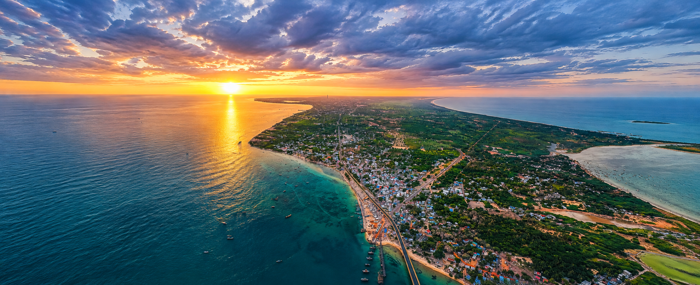
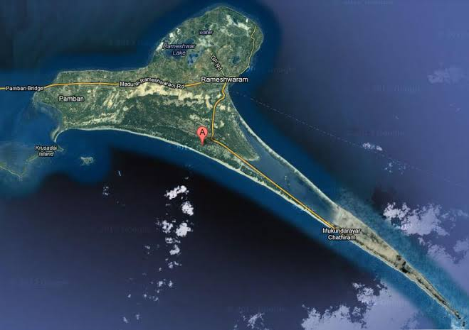
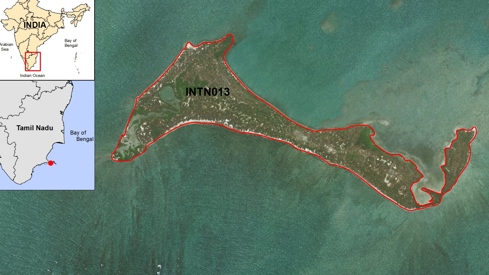
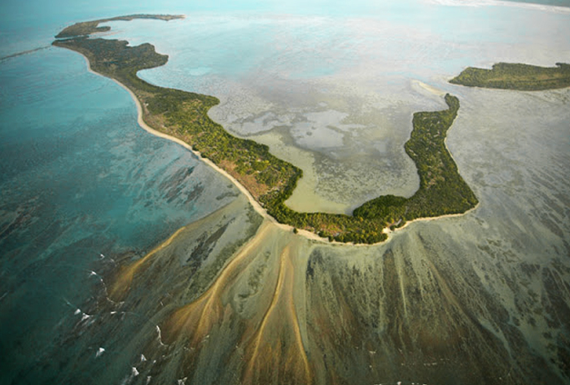
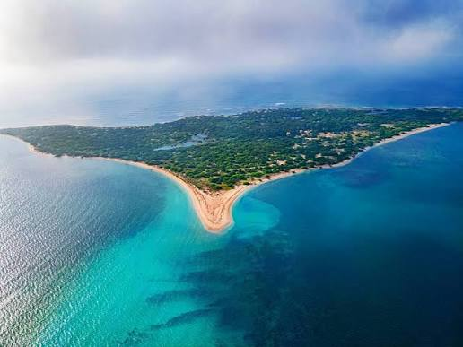
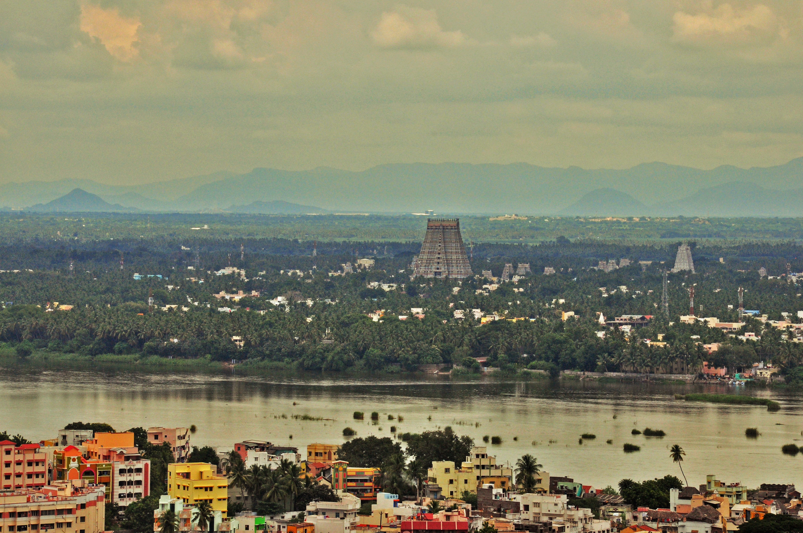
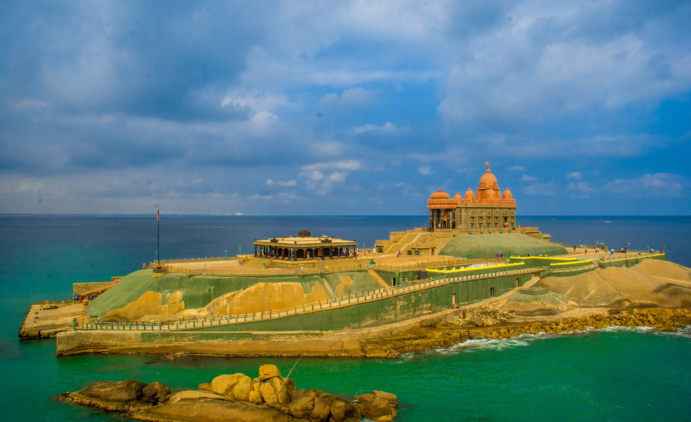

தமிழ்நாட்டின் தீவுகள் கடல் மற்றும் ஆறுகளுடன் தொடர்புடைய தனித்துவமான நிலப்பரப்புகளாகும். இவை இயற்கை வளங்கள், கடல்சார் உயிரினங்கள், சுற்றுலா, ஆன்மிகம் மற்றும் வரலாற்று முக்கியத்துவம் கொண்டவை. குறிப்பாக மன்னார் வளைகுடா பகுதியில் உள்ள தீவுகள் பவளப்பாறைகள் மற்றும் அரிய கடல்வாழ் உயிரினங்களுக்கான முக்கிய வாழிடங்களாக உள்ளன.
தமிழ்நாட்டில் மொத்தம் 28 புவியியல் ரீதியான தீவுகள் உள்ளதாகக் குறிப்பிடப்படுகிறது. அவற்றில் சுமார் 10 முக்கியமான தீவுகள் கடல் மற்றும் ஆற்று தீவுகளாக குறிப்பிடத்தக்கவை.
குறிப்பு: மன்னார் வளைகுடா கடல் தேசியப் பூங்கா 21 தீவுகளைக் கொண்ட தீவுக்கூட்டமாக அமைந்து, டுகாங், கடல் ஆமைகள் மற்றும் பவளப்பாறை உயிரினங்களின் முக்கிய வாழிடமாக திகழ்கிறது.
28 புவியியல் தீவுகள்
சுமார் 10 முதன்மைத் தீவுகள்
21 தீவுகள் கொண்ட தேசியப் பூங்கா
டுகாங், கடல் ஆமைகள் & பவளப்பாறைகள்
பவளப்பாறைகள் மற்றும் அரிய கடல்வாழ் உயிரினங்களின் வாழிடமாக தீவுகள் செயல்படுகின்றன.
மன்னார் வளைகுடா பகுதி டுகாங் போன்ற அரிய கடல்வாழ் பாலூட்டிகளுக்கு முக்கியமான பாதுகாப்பு வாழிடமாகும்.
பல்வேறு உள்நாட்டு மற்றும் வலசை வரும் பறவைகள், கடல்வாழ் உயிரினங்களுக்கு பாதுகாப்பான சூழலை வழங்குகின்றன.
ராமேஸ்வரம், கன்னியாகுமரி போன்ற பகுதிகளின் சுற்றுலா வளர்ச்சிக்கும் உள்ளூர் பொருளாதாரத்திற்கும் பெரும் பங்காற்றுகின்றன.
வரலாற்றுச் சிறப்புமிக்க கோயில்கள், நினைவு மண்டபங்கள் மற்றும் வரலாற்றுச் சின்னங்களுடன் நெருங்கிய தொடர்புடையவை.
கடலோர மற்றும் கடல்சார் சூழல்களின் இயற்கை சமநிலையைப் பாதுகாக்கவும் மண் அரிப்பைத் தடுக்கவும் உதவுகின்றன.

பாம்பன் தீவு பரப்பளவில் தமிழ்நாட்டின் மிகப்பெரிய தீவாகும். இது தென்கிழக்குக் கடற்கரைக்கு அருகில் அமைந்துள்ளது. தீவில் அமைந்துள்ள ராமேஸ்வரம் முக்கியமான புனிதத் தலமாக விளங்குகிறது.
வரலாற்றுச் சிறப்புமிக்க பாம்பன் பாலம் மூலம் இந்தத் தீவு இந்தியாவின் நிலப்பரப்புடன் இணைக்கப்பட்டுள்ளது. ஆன்மிகம் மற்றும் சுற்றுலாவில் முதன்மை இடம் வகிக்கிறது.

முயல் தீவு தூத்துக்குடி கடற்கரைக்கு அருகில் அமைந்துள்ள முக்கியமான தீவாகும். இது உள்ளூர் சுற்றுலாவிற்கு பிரபலமானது. தீவின் சில பகுதிகள் கடல்சார் பாதுகாப்பு விதிகளின் கீழ் வருகின்றன.
மன்னார் வளைகுடா கடல்சார் சூழலுடன் இணைந்துள்ள இத்தீவு, இயற்கை விரும்பிகளுக்கு ஒரு சிறந்த தளமாகும்.

குரூசடை தீவு மன்னார் வளைகுடாவில் உள்ள முக்கியமான கடல் தீவுகளில் ஒன்றாகும். இது கடல்சார் உயிரியல் வளம், பவளப்பாறைகள் மற்றும் அரிய நுண்ணுயிரினங்களுக்காக முக்கியத்துவம் பெறுகிறது.
சுற்றுச்சூழலைப் பாதுகாக்க பொதுமக்களின் அணுகல் பெரும்பாலும் கட்டுப்படுத்தப்பட்டு ஆராய்ச்சிகளுக்கு முக்கியத்துவம் அளிக்கப்படுகிறது.

நல்லதண்ணி தீவு இராமநாதபுரம் மாவட்டத்தின் கடலாடி வட்டாரத்தில் அமைந்துள்ள மக்கள் வசிப்பில்லாத தீவாகும்.
கடல்நீரால் சூழப்பட்டிருந்தாலும், தீவில் நன்னீர் நிலத்தடி நீர் காணப்படுவது இதன் தனிச்சிறப்பாகக் குறிப்பிடப்படுகிறது. மன்னார் வளைகுடா பாதுகாப்புப் பகுதிகளுடன் தொடர்புடையது.

ஸ்ரீரங்கம் தீவு காவிரி மற்றும் அதன் கிளைநதியான கொள்ளிடம் ஆகியவற்றுக்கு இடையில் உருவான மிகப்பெரிய ஆற்று தீவாகும். இது திருச்சிராப்பள்ளி நகரின் முக்கிய பகுதியாக விளங்குகிறது.
தீவின் முக்கிய அடையாளமாக ஸ்ரீ ரங்கநாதசுவாமி கோயில் அமைந்துள்ளது. ஆன்மிக மற்றும் கலாச்சார வரலாற்றில் உலகப் புகழ்பெற்றது.

விவேகானந்தர் பாறை கன்னியாகுமரிக்கு அருகிலுள்ள கடலில் அமைந்துள்ள முக்கியமான பாறைத் தீவாகும். இங்கு அமைந்துள்ள விவேகானந்தர் நினைவு மண்டபம் கன்னியாகுமரியின் முக்கிய அடையாளங்களில் ஒன்றாகும்.
ஆன்மிக மற்றும் சுற்றுலா முக்கியத்துவம் கொண்ட இத்தீவு, முக்கடல் சந்திக்கும் தென்முனைப் பகுதியுடன் இணைந்து சிறப்புப் பெறுகிறது.
| எண் | தீவு | அமைவிடம் | முக்கிய சிறப்பு |
|---|---|---|---|
| 1 | பாம்பன் தீவு | இராமநாதபுரம் | தமிழ்நாட்டின் மிகப்பெரிய தீவு, ராமேஸ்வரம் |
| 2 | முயல் தீவு | தூத்துக்குடி | சுற்றுலா மற்றும் கடல்சார் சூழல் |
| 3 | கிருசடை தீவு | மன்னார் வளைகுடா | பவளப்பாறைகள் மற்றும் கடல்சார் உயிரினங்கள் |
| 4 | நல்லதண்ணி தீவு | இராமநாதபுரம் | நன்னீர் நிலத்தடி நீர் |
| 5 | ஸ்ரீரங்கம் தீவு | திருச்சிராப்பள்ளி | காவிரி–கொள்ளிடம் ஆற்று தீவு |
| 6 | குவிபிள் தீவு | சென்னை | அடையாறு ஆற்று தீவு |
| 7 | விவேகானந்தர் பாறை | கன்னியாகுமரி | விவேகானந்தர் நினைவு மண்டபம் |
| 8 | காட்டுப்பள்ளி தீவு | சென்னை வடக்கு | துறைமுகம் மற்றும் தொழில்துறை |
| 9 | கச்சத்தீவு | பாக் நீரிணை | இந்தியா–இலங்கை கடல்சார் முக்கியத்துவம் |
| 10 | உப்புத்தண்ணி தீவு | மன்னார் வளைகுடா | கடல்வாழ் உயிரினங்கள் மற்றும் பவளப்பாறை பாதுகாப்பு |
| 11 | புல்லிவாசல் தீவு | மன்னார் வளைகுடா | கடல்சார் உயிரியல் வளம் மற்றும் பாதுகாப்பு |
| 12 | ஷிங்கிள் தீவு | மன்னார் வளைகுடா | கடல்வாழ் உயிரினங்கள் மற்றும் பவளப்பாறை சூழல் |
| 13 | முள்ளி தீவு | மன்னார் வளைகுடா | கடல்சார் உயிரியல் வளம் கொண்ட பாதுகாக்கப்பட்ட தீவு |
| 14 | வாலை தீவு | மன்னார் வளைகுடா | பவளப்பாறைகள் மற்றும் கடற்புல் சூழல் |
| 15 | அப்பா தீவு | மன்னார் வளைகுடா | பவளப்பாறைகள், கடற்புல் மற்றும் கடல்வாழ் உயிரினங்கள் |
“தீவுகள் சிறிய நிலப்பரப்பாக இருந்தாலும், அவை தாங்கும் இயற்கை வளம் மிகப்பெரியது.”